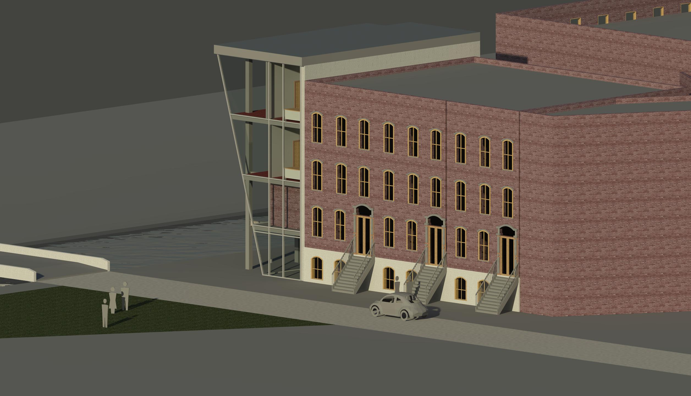
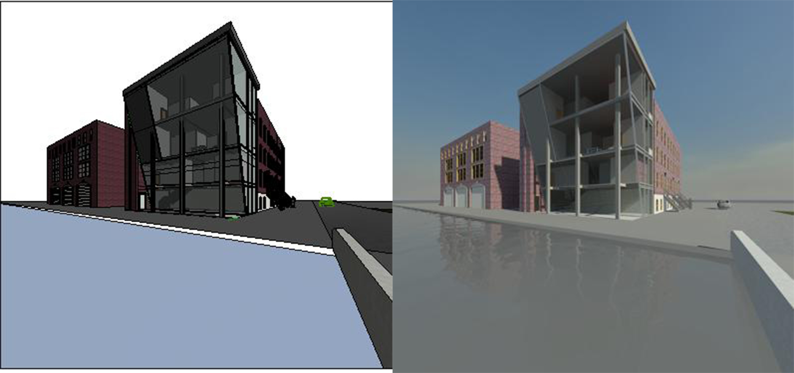
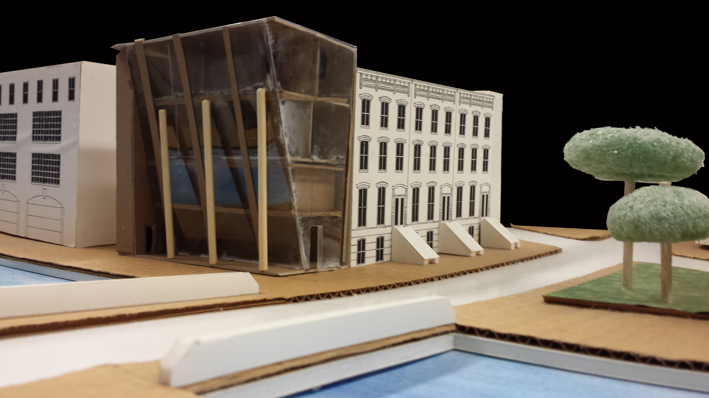

Townhouse
High School for Math, Science, & Engineering Ernesto Pedroso
The Townhouse is a design project for a client, who has purchased the site for his flower shop, which is to occupy the first two floors, with two apartments above. The client, a businessman with a passion for art and architecture history, desires facades that reflect his interest in architecture.
CONCEPT:It is the façade that provides the transition from public realm to private. The façade may vary from the thinnest of skins to zones of considerable spatial depth; with the careful manipulation of surface and mass the architect is able to accommodate the functional needs of the enclosed space. It is the conceptual development and integration of profile and shadow, of symbol and meaning, that architecture becomes a poetic form.
The main design concept was to create a very modern, industrialized and clean design, but still have the design fit in with the existing environment. The building is made of glass to bring a new material into the environment, but there are some interior wall made of brick to make some similarities with existing buildings and to show a steady TRANSFORMATION from old to new. The sloped glass wall is a ground- breaking difference, but it is such a simple change that it won’t stand out awkwardly. A break in tradition that is still acceptable.



